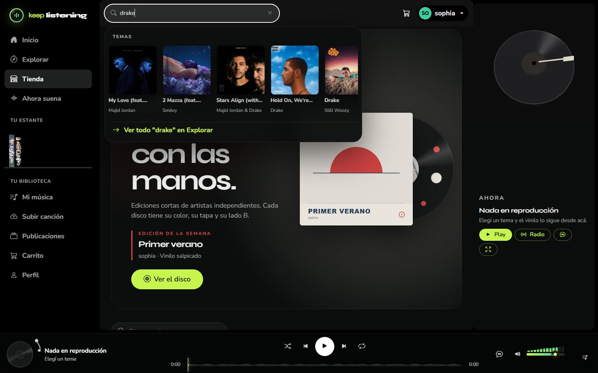
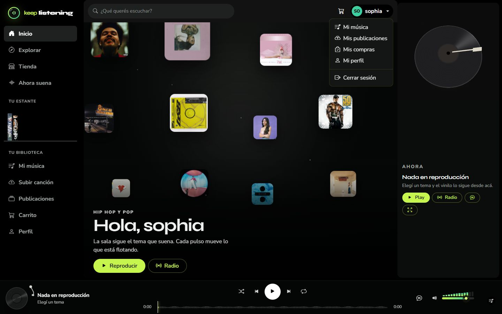
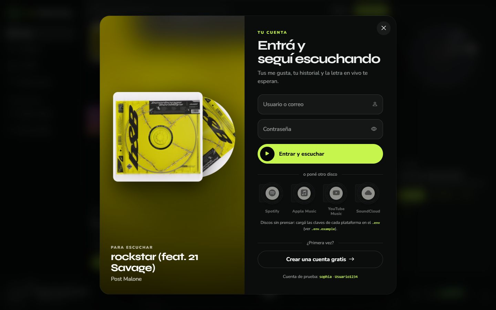
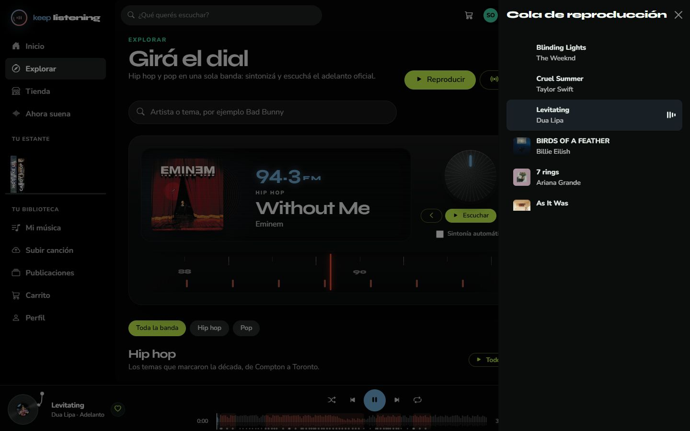
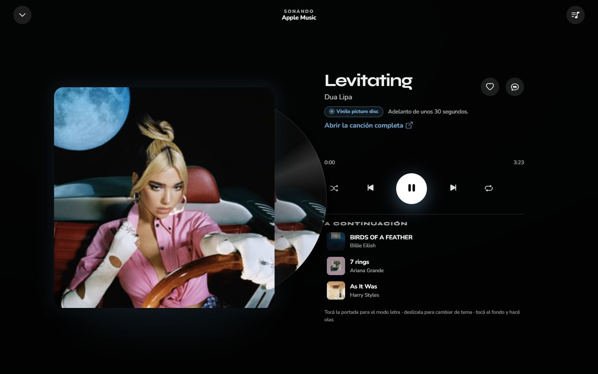
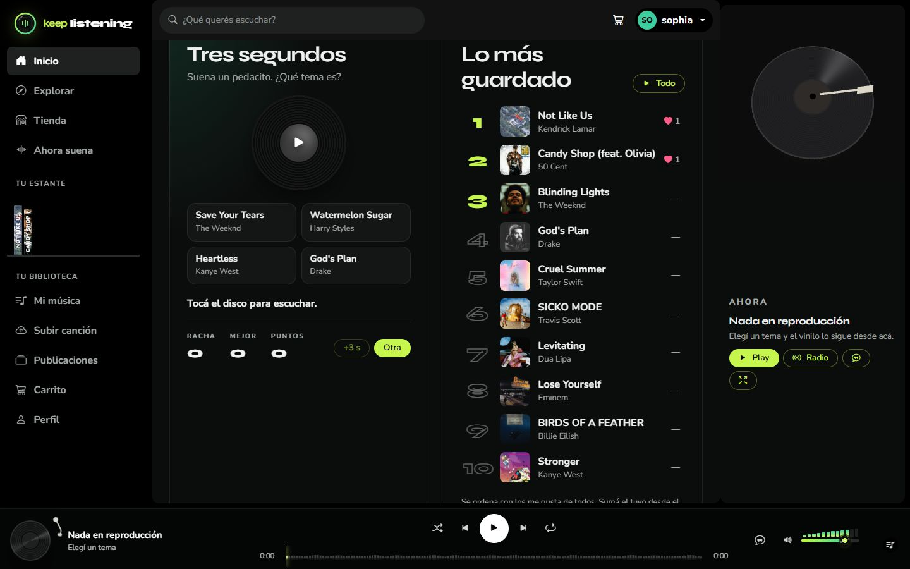
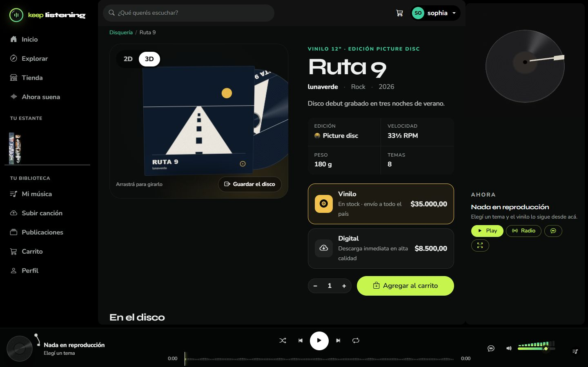
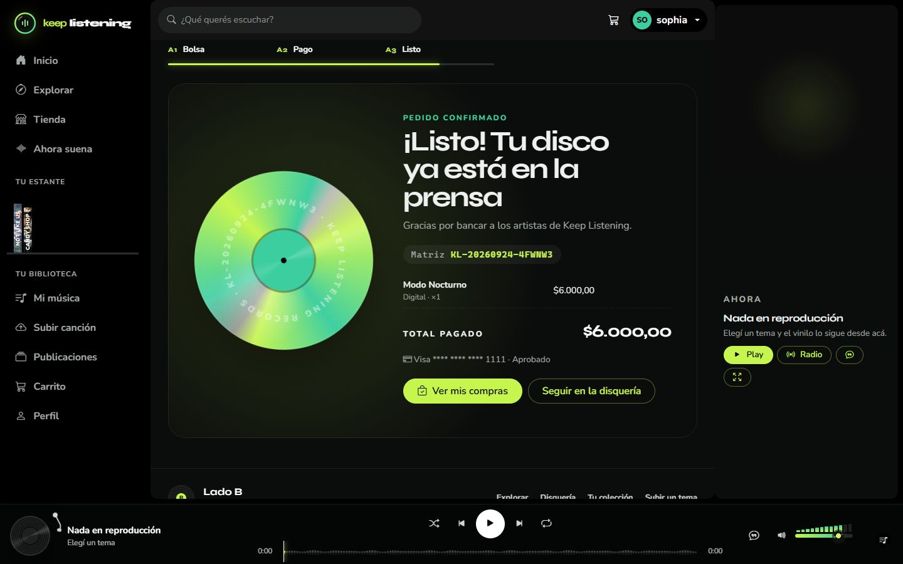

Manual de usuario
Keep Listening
Todo lo que se puede ver y hacer en la página: escuchar, guardar, publicar, comprar y administrar.
| Integrantes | Sophia Benitez · Alí Pérez |
|---|---|
| Empresa | TecnoPlus |
| Materia | Taller de Construcción de Software · 6.º año |
| Entrega | 6 de noviembre de 2026 |
Contenido
- La pantalla y cómo moverse
- Crear una cuenta e iniciar sesión
- El reproductor
- "Ahora suena"
- La letra
- Inicio
- Explorar
- Mi música
- Publicar tu música
- La tienda
- Tu perfil
- Panel de administración
- Atajos de teclado
- Preguntas rápidas
1. La pantalla y cómo moverse
Todas las pantallas tienen las mismas cuatro partes: el menú de la izquierda, la barra de arriba, el panel "Ahora" a la derecha y el reproductor abajo. Al pasar de una sección a otra la página no se recarga: la música sigue sonando. Mientras carga, una línea recorre el borde de arriba.
Menú de la izquierda
- Inicio, Explorar, Tienda y Ahora suena (abre la pantalla completa del tema que suena).
- Tu estante: tus últimos 14 "me gusta" como lomos de discos. Pasá el mouse por un lomo para ver la tapa; tocalo para escucharlo (el estante queda como lista). Se actualiza al instante cuando marcás o desmarcás un corazón.
- Tu biblioteca: Mi música, Subir canción, Publicaciones, Carrito (con la cantidad de discos) y Perfil. Los administradores ven además Panel. Sin sesión aparecen "Iniciar sesión" y "Crear cuenta".
- En el celular el menú se abre con el botón ☰ de arriba a la izquierda, y trae su propio buscador.
El buscador

- Escribí al menos 2 letras y aparecen los resultados, ordenados en grupos: Temas (tocá una tapa para escucharla), De la comunidad, En la disquería (discos de la tienda) y Artistas.
- Con el teclado: ↓ / ↑ recorren los resultados, Enter abre el marcado (o busca todo en Explorar) y Esc cierra. Abajo está "Ver todo en Explorar".
Tu cuenta y el carrito


- Arriba a la derecha está el carrito con su contador y tu nombre: abre un menú con Mi música, Mis publicaciones, Mis compras, Mi perfil, Panel (administradores) y Cerrar sesión.
- Sin sesión, al tocar un tema, un corazón o el juego aparece el panel "Entrá y seguí escuchando": iniciás sesión ahí mismo y el tema arranca solo, sin perder la página. Se cierra con la X, tocando afuera o con Esc.
El panel "Ahora" (derecha)
- Muestra un tocadiscos con el tema que suena. Tocarlo abre "Ahora suena".
- Play pausa o reanuda (si no sonaba nada, arranca la lista de la página), Radio pone temas al azar, el botón de comillas abre la letra y el de las flechas abre la pantalla completa.
El fondo y los avisos
- Mientras suena un tema, la página se vuelve translúcida y el fondo toma los colores de la portada, respira con la música y sigue el mouse. Un clic en una zona vacía larga una onda.
- Los avisos (por ejemplo "Agregado al carrito") aparecen abajo y se van solos; si pasás el mouse por encima se quedan, y tienen una X para cerrarlos.
2. Crear una cuenta e iniciar sesión


Crear la cuenta
- Tocá Registrarse. Completá usuario (hasta 30 caracteres), correo y contraseña dos veces.
- Mientras escribís, tu usuario aparece en la etiqueta del vinilo y un medidor dice qué tan segura es la contraseña (de "Muy débil" a "Excelente"). Cuanto más segura, más especial la edición del disco: negro, color, marmolado, salpicado y neón.
- La contraseña necesita al menos 8 caracteres, una mayúscula y un número, y no puede ser común, solo números ni parecida a tu usuario o correo. El ojito la muestra.
- Tocá Crear mi cuenta: entrás directamente.
Entrar
- Escribí tu usuario o tu correo y la contraseña, y tocá Entrar.
- Después de 5 intentos fallidos el ingreso se frena unos 15 minutos ("Demasiados intentos").
- Si un administrador bloqueó tu cuenta, al entrar ves el motivo.
- Los discos de Spotify, Apple Music, YouTube Music y SoundCloud sirven para entrar con esas cuentas cuando están configurados; si no, se ven apagados.
3. El reproductor

| Parte | Qué hace |
|---|---|
| Vinilo (izquierda) | Tocalo para abrir "Ahora suena". Agarralo y giralo en círculos para hacer scratch: adelanta o retrocede y el sonido sigue a tu mano. |
| Título | Abre "Ahora suena". Los temas de Apple dicen "Adelanto" (son fragmentos de 30 segundos). |
| ♡ Corazón | Guarda el tema en Mi música (y en tu estante). Tocalo de nuevo para quitarlo. |
| ▶ / ❚❚ | Play o pausa, con efecto de tocadiscos que frena y arranca. |
| ⏮ Anterior | Si el tema lleva más de 4 segundos, vuelve al principio; si no, va al anterior. |
| ⏭ Siguiente | Pasa al próximo. Al terminar la lista vuelve al primero. |
| Aleatorio | El próximo tema se elige al azar. |
| Repetir | Cuando el tema termina, vuelve a empezar. |
| La onda | Es el dibujo real del tema. Tocá o arrastrá para adelantar. Al pasar el mouse ves el tiempo y el verso de ese punto. Las zonas resaltadas son los estribillos. |
| Estribillo | Salta directo al próximo estribillo (aparece solo si el tema tiene letra sincronizada). |
| 💬 Letra | Abre la letra en pantalla completa; tocarlo otra vez la cierra. |
| Volumen | Arrastrá la barra, o usá la rueda del mouse o las flechas (de a 5 %). Las barritas se encienden hasta el nivel y saltan con la música; arriba aparece el porcentaje. El parlante silencia; si el volumen estaba en 0, vuelve al último que se escuchaba. |
| Pila de discos | Muestra lo que viene. Tocala para ver la cola completa y saltar a cualquier tema. |

El volumen se recuerda mientras la pestaña esté abierta. Si es un adelanto de Apple y era el último de la lista, al terminar aparece el aviso "Se terminó el adelanto".
4. "Ahora suena"

Es la pantalla completa del tema que suena: portada grande, controles, una barra con un espectro que reacciona al audio y la lista "A continuación" (los próximos 3; tocá uno para escucharlo).
- Abrirla: "Ahora suena" en el menú, el tocadiscos del panel derecho, el vinilo o el título del reproductor, la portada que está sonando en el Inicio, o la tecla E. Si no sonaba nada, arranca la radio.
- Cerrarla: la flecha de arriba, Esc, la tecla E, o arrastrando la parte de arriba hacia abajo.
- La portada: se inclina con el mouse y late con los graves. Deslizala hacia la izquierda para pasar al siguiente tema y hacia la derecha para el anterior. Tocarla abre la letra.
- En los temas de Apple está el link "Abrir la canción completa".
- Con la pantalla abierta: L letra, Espacio play/pausa, M silencio, → / ← siguiente / anterior.
5. La letra

- Letra sincronizada (túnel): los versos salen del disco y avanzan con la canción; la línea que se canta queda adelante y se pinta palabra por palabra.
- Mové el mouse para inclinar el túnel.
- Usá la rueda o el dedo para recorrer la letra; a los pocos segundos vuelve sola al verso actual.
- Tocá un verso, o usá ↑ / ↓, para llevar la canción a ese momento.
- A la derecha hay un mapa con una marca por verso (los estribillos resaltados); tocá una marca para ir ahí.
- Efectos: algunas palabras se iluminan con partículas (fuego, amor, estrellas, lluvia, dinero), los versos cortos o gritados entran con un golpe y el estribillo que vuelve hace eco. En las pausas largas aparecen tres puntos.
- Letra sin sincronizar: se muestra entera, como una hoja en columnas y separada en estrofas. Pasa cuando no se sabe en qué parte del tema empieza el adelanto ("Letra completa · el adelanto es un fragmento").
- Si un tema no tiene letra publicada, la pantalla lo avisa.
6. Inicio

- La sala: 12 portadas al azar que cambian en cada visita y se mueven con la música. Pasá el mouse para ver el título; tocá una para escucharla. Reproducir pone las 12 en orden y Radio mezcla.
- Tus me gusta: tus temas guardados, con "Reproducir todo" y un corazón para quitar cada uno.
- El disco del día: igual para todos y cambia a medianoche. Tiene un lado A (hip hop) y un lado B (pop) de 5 temas; "Dar vuelta el disco" cambia de lado.
- Lo más guardado: los 10 temas con más "me gusta" de toda la comunidad.
- En la batea: un disco por artista; tocalo y suenan sus temas.
- Recién prensados: los últimos discos de la tienda. Hecho en la sala: los últimos temas que subieron los usuarios.
El juego "Tres segundos"

- Tocá el disco: suenan 3 segundos de un tema.
- Elegí cuál es entre las 4 opciones. Si no te sale, +3 s te deja escuchar 6 segundos.
- Acertar con 3 segundos da 3 puntos; con 6 segundos, 1 punto. Se lleva la racha y tu mejor marca.
- Después de responder, Entero pone el tema en el reproductor y Otra arma una ronda nueva.
7. Explorar

- El dial: funciona como una radio FM. Cada tema es una "estación".
- Arrastrá la banda o la perilla, usá la rueda del mouse o los botones ‹ ›. Entre estaciones se escucha estática y al soltar cae en la más cercana.
- Con el foco en la banda: flechas (de a una), RePág/AvPág (de a 5) y Enter para escuchar.
- Escuchar pone la estación. Con Sintonía automática activada, suena sola cuando dejás quieto el dial.
- El buscador: escribí un artista o tema y apretá Enter. Muestra temas de Apple y de la comunidad.
- Filtros: "Toda la banda", "Hip hop" y "Pop". Cada sección tiene un botón para escucharla entera.
- Reproducir y Radio (arriba) ponen toda la lista en orden o mezclada.
8. Mi música

- La batea: tus "me gusta" como discos parados. Pasalos con la rueda del mouse, arrastrando hacia arriba o abajo, o con las flechas. Tocá un disco de atrás para traerlo adelante y el de adelante para escucharlo. Toda la batea los pone todos seguidos.
- De la comunidad: los temas de usuarios que guardaste y "Lo que sonó" (los últimos 30 que escuchaste).
- Tus publicaciones: lo que subiste y en qué estado está.
9. Publicar tu música


- En Subir canción, arrastrá el audio o tocá para elegirlo: mp3, wav, ogg, m4a o flac, hasta 25 MB.
- El "torno" lee el archivo y lo corta en el disco: ves su duración y su peso, y con Escuchar el corte lo oís antes de subirlo.
- Escribí el nombre (aparece en la etiqueta del disco), elegí el género y si es sencillo o parte de un álbum. Si es de un álbum, elegí cuál y el número de pista; si todavía no lo tenés, usá "Creá el álbum primero".
- Sumá la portada (cuadrada, hasta 5 MB): se ve en la etiqueta.
- Tocá Enviar a revisión.
- En Publicaciones filtrás por estado (todas, en revisión, aprobadas, rechazadas) y seguís el recorrido de cada tema: Subida → En revisión → En la sala (aprobado, ya lo escucha todo el mundo) o Devuelta, con el motivo ("Por qué volvió").
- Cada tema tiene Editar y Eliminar. Al editarlo vuelve a revisión.
- Tus álbumes: creá o editá un álbum (título, género, fecha, portada, formato, precios y stock). Queda oculto en la tienda hasta que lo publique un administrador.
- Cada tema aprobado tiene su ficha: reproducir, guardar, abrir "Ahora suena" y temas parecidos.
10. La tienda


Buscar un disco
- Arriba está el disco destacado. Abajo podés buscar por disco o artista, filtrar por género y ordenar (recientes, menor o mayor precio, A-Z).
- Al pasar el mouse por una tarjeta, el disco sale de la funda y gira. Las etiquetas avisan "Últimas unidades" o "Agotado".
La ficha del disco
- 2D / 3D: en 3D arrastrá el disco (mouse o dedo) para girarlo y ver la contratapa; si lo soltás, gira solo. Guardar el disco mete el vinilo en la funda.
- Elegí Vinilo (físico, con envío; avisa cuántos quedan) o Digital, la cantidad con − / + (de 1 a 20), y tocá Agregar al carrito: el contador de arriba se actualiza.
- Más abajo: los temas del disco y otros discos del artista.
Comprar


- Bolsa (carrito): cambiá cantidades con − / + (en 1, el − quita el disco), quitá un disco con la X o vaciá todo. El ticket muestra el total. Tocá Ir a pagar.
- Pago: completá número de tarjeta, nombre, apellido, vencimiento (MM/AA) y código. La tarjeta dibujada se completa mientras escribís y muestra la marca.
- Listo: aparece el número de pedido, el detalle y el total.
El pago es una simulación: no se cobra nada y no hace falta una tarjeta real. Pero el número tiene que tener formato válido, como en una tienda de verdad: un número inventado da "número de tarjeta no válido". Usá la tarjeta de prueba 4111 1111 1111 1111, vencimiento 12/30 y código 123 (también sirven 5555 5555 5555 4444 y 3782 822463 10005). Solo se guardan los últimos 4 números.


Dónde ver lo que compraste
En Mis compras (menú de tu cuenta, o Perfil → Tus compras) están todos tus pedidos con su número, fecha, discos y total, y el recorrido de cada uno: los vinilos pasan por Recibido → Pagado → En camino → Entregado, y los digitales por Recibido → En tu biblioteca. Si algo cambió mientras pagabas (precio o stock), volvés a la bolsa con un aviso.
11. Tu perfil

- Editá nombre, apellido, correo, biografía y foto (hasta 5 MB): la foto se ve en la etiqueta del disco.
- Cambiar contraseña: la actual y la nueva dos veces. La sesión sigue abierta.
- Tus lugares: accesos a tu colección, publicaciones, compras y tu página pública, que es lo que ven los demás: tus temas y discos, con "Escuchar a…" para reproducir todo.
12. Panel de administración

Solo para administradores: aparece como Panel en el menú.
| Resumen | Medidores de cuentas, temas en revisión (titila si hay pendientes), temas publicados, escuchas, me gusta, pedidos y lo facturado. El gráfico "Bus master" muestra la actividad de los últimos 14 días (pasá el mouse por un día para ver el detalle). Además: la cola de revisión, lo más escuchado, lo más guardado y los últimos pedidos. |
|---|---|
| Pruebas de prensa | Los temas que suben los usuarios. Filtrá (pendientes, aprobados, rechazados, todos) o buscá. Aprobar lo publica al instante; Rechazar pide un motivo, que el artista ve; Eliminar pide confirmación. En el detalle de cada tema podés escucharlo en el plato y retocar sus datos. |
| Cuentas | Buscar y filtrar usuarios, bloquear o desbloquear (no la propia cuenta) y cambiar el rol. |
| Catálogo | Los discos de la tienda con su stock (luz roja si está en 0, ámbar si quedan pocos) y si están publicados. Crear, editar ("Visible en la tienda") o eliminar. |
| Pedidos | Filtrar por estado y pasarlos a pagado, enviado, entregado o cancelado. Cancelar devuelve el stock y no se puede deshacer. |
| Géneros | Agregar o eliminar géneros; el ojo abre el género en Explorar. |


13. Atajos de teclado
| Tecla | Dónde | Qué hace |
|---|---|---|
| Espacio | Toda la página | Play / pausa |
| Shift + → / ← | Toda la página | Siguiente / anterior |
| M | Toda la página | Silenciar |
| E | Toda la página | Abrir o cerrar "Ahora suena" |
| → / ←, L, Esc | "Ahora suena" | Siguiente / anterior, letra, cerrar |
| ↑ / ↓ | Letra | Ir al verso anterior / siguiente |
| ↑ / ↓, Enter, Esc | Buscador | Recorrer, abrir, cerrar |
| Flechas, Enter | Dial, batea y volumen | Moverse y escuchar |
Los atajos generales no funcionan mientras escribís en un campo.
14. Preguntas rápidas
- No suena nada: revisá la conexión a internet (los temas vienen de Apple Music) y que el parlante no esté tachado.
- Me pide iniciar sesión al tocar un tema: escuchar requiere una cuenta.
- No encuentro mi canción en Explorar: todavía está en revisión; fijate en Publicaciones.
- "Número de tarjeta no válido": usá la tarjeta de prueba de la sección 10.
- La letra se ve como una hoja y no avanza: ese tema no tiene letra sincronizada con su adelanto.
Keep Listening · TecnoPlus · Sophia Benitez y Alí Pérez · 2026